Manual do Administrador — Compra Mais
Programa Compra Mais · Prefeitura de Rio Branco Guia do Painel Administrativo para a equipe interna — da gestão de editais ao fornecimento, incluindo configuração da plataforma, governança e auditoria.
As telas deste manual são reais, capturadas do sistema em funcionamento (ambiente de demonstração). Os dados (empresas, editais, valores) são apenas exemplos. Cada seção indica qual perfil acessa a tela.
Sumário
- O Painel Administrativo e os perfis
- Acesso à plataforma
- Dashboard — visão geral
- O fluxo operacional
- Gestão de Editais
- Credenciamento em Edital
- Análise Documental
- Distribuição Inteligente
- Cadastro de Reserva
- Desistências
- Malote SEI
- Fornecedores
- Contestações de CNAE
- Atendimento LGPD
- Relatórios
- Catálogos
- Secretarias
- Setores Industriais (CNAE)
- Tipos de Arquivos
- Usuários internos
- Administração de Telas por Perfil
- Auditoria
- Glossário e boas práticas
1. O Painel Administrativo e os perfis
O Painel Administrativo é a área interna do Compra Mais, usada pela equipe da Prefeitura para conduzir todo o ciclo das compras municipalizadas — do edital ao fornecimento — e para administrar a plataforma (usuários, catálogos, permissões, auditoria).
O acesso é por papel (perfil). Cada papel enxerga apenas as telas pertinentes à sua função. Os papéis internos são:
| Perfil | Papel no processo | Telas típicas |
|---|---|---|
| Administrador | Superusuário da plataforma | Usuários, Secretarias, Setores, Tipos de Arquivos, Auditoria, Telas por perfil, Malote, Relatórios |
| Secretaria / Gestor (SMGA) | Operação das compras | Dashboard, Fornecedores, Credenciamento, Análise Documental, Distribuição, Reserva, Desistências, Malote, Catálogos, Editais, Contestações, LGPD, Relatórios |
| Analista CPL | Fluxo de editais e habilitação | Gestão de Editais, Credenciamento, Análise Documental |
| Auditor | Fiscalização | Auditoria |
| Encarregado (DPO) | Privacidade / LGPD | Atendimento LGPD |
| Somente leitura | Consulta | Painel (visão macro) |
Quem enxerga o quê é configurável pelo Administrador, na tela Telas por Perfil (seção 21). O Administrador nunca perde o acesso a essa tela (proteção anti‑lockout).
flowchart LR
subgraph Operação
SMGA[Secretaria / Gestor]
CPL[Analista CPL]
end
subgraph Administração
ADM[Administrador]
end
subgraph Governança
AUD[Auditor]
DPO[Encarregado LGPD]
end
SMGA --> Editais & Credenciamento & Distribuição & Malote
CPL --> Editais & Credenciamento
ADM --> Usuários & Catálogos & Telas & Auditoria
DPO --> LGPD
AUD --> Auditoria
2. Acesso à plataforma
Os usuários internos entram com e-mail e senha institucionais. Após o login, cada perfil é levado à sua tela inicial (a primeira tela visível ao papel).
Esqueceu a senha? Use Esqueci minha senha para redefini-la por e-mail. A gestão de contas internas é feita pelo Administrador em Usuários (seção 20).
3. Dashboard — visão geral
(perfil SMGA / Gestor)
O Dashboard (menu Painel) resume a operação das compras municipalizadas.
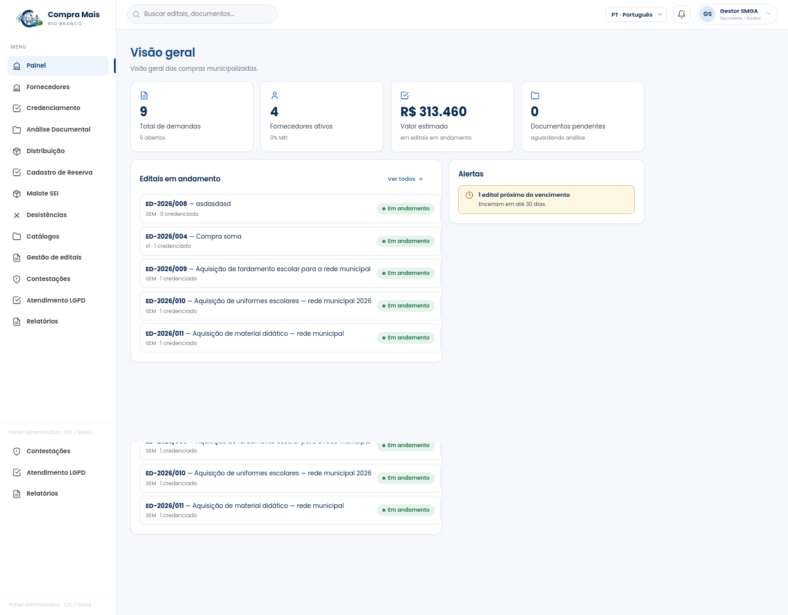
- Indicadores: Total de demandas (e quantas abertas), Fornecedores ativos (e % MEI), Valor estimado em editais em andamento e Documentos pendentes aguardando análise.
- Editais em andamento: lista com número, objeto, secretaria e nº de credenciados.
- Alertas: destaques como editais próximos do vencimento.
Use-o como ponto de partida do dia: ele aponta o que exige ação (análises pendentes, editais a vencer).
4. O fluxo operacional
Do cadastro da demanda ao fornecimento, o caminho é:
flowchart TD
A["Gestão de Editais<br/>criar → itens → publicar"] --> B["Fornecedores se credenciam<br/>(portal do fornecedor)"]
B --> C["Análise Documental<br/>covalidar documentos"]
C --> D{"Fornecedor apto?"}
D -- sim --> E["Distribuição Inteligente<br/>rateio por item + homologação"]
D -- não --> C
E --> F["Malote SEI<br/>formaliza o processo"]
E --> G["Saldo não coberto<br/>→ Cadastro de Reserva"]
F --> H["Fornecimento"]
As próximas seções detalham cada etapa.
5. Gestão de Editais
(perfis SMGA e CPL)
Aqui você cria e administra os editais (as demandas). Um edital nasce em rascunho, recebe itens (do catálogo de materiais/serviços, com unidade, quantidade e preço-teto) e, quando pronto, é publicado — passando a aparecer na vitrine dos fornecedores compatíveis.
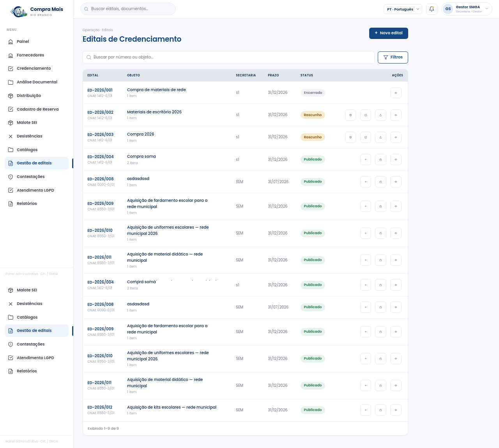
Passo a passo para publicar um edital:
flowchart LR
A["Novo edital<br/>secretaria + objeto + CNAEs + vigência<br/>+ exige prova de vida?"] --> B["Adicionar itens<br/>unidade · quantidade · preço-teto"]
B --> C["Publicar"]
C --> D["Aparece na vitrine<br/>dos fornecedores compatíveis"]
D --> E["Encerrar<br/>(quando concluído)"]
- CNAEs-alvo definem quais empresas verão o edital (compatibilidade por ramo).
- Itens só são editáveis enquanto o edital está em rascunho.
- Vigência (prazo) controla o encerramento; o edital pode ser despublicado/ encerrado.
- Exigir prova de vida (biometria): no cadastro do edital há a opção "Exigir prova de vida (biometria)". Quando marcada, o credenciamento naquele edital só conclui o Termo de Aceite após o fornecedor aprovar a verificação facial (UC007); quando desmarcada (padrão), o passo de prova de vida não é exigido e o fornecedor assina o Termo direto. A opção é editável enquanto o edital está em rascunho.
6. Credenciamento em Edital
(perfis SMGA e CPL)
Mostra, por edital, os fornecedores elegíveis (compatíveis por CNAE e regulares) e o andamento das solicitações de credenciamento. É a visão administrativa do que o fornecedor faz no portal.
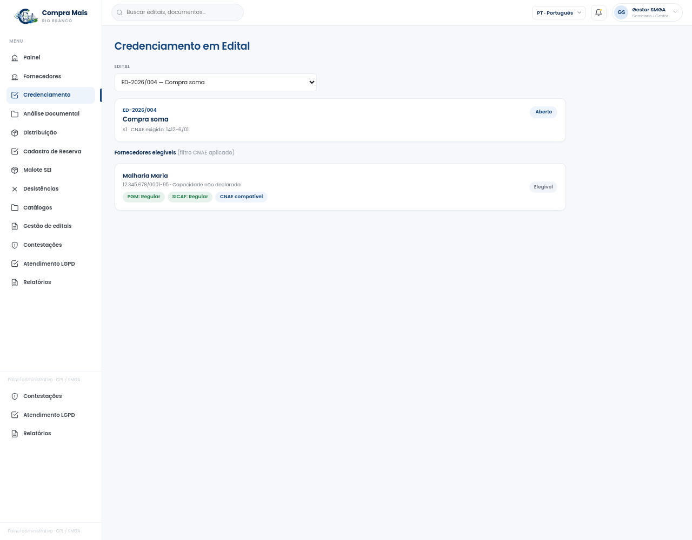
A regra de compatibilidade (CNAE) e a regularidade (documentos) determinam quem pode se credenciar. Divergências de CNAE são tratadas em Contestações (seção 13).
7. Análise Documental
(perfis SMGA e CPL)
A fila de análise reúne os documentos enviados pelos fornecedores que aguardam validação (covalidação). O analista aprova ou reprova cada documento, com motivo. Documentos aprovados são reaproveitados entre editais; reprovados voltam ao fornecedor para correção.
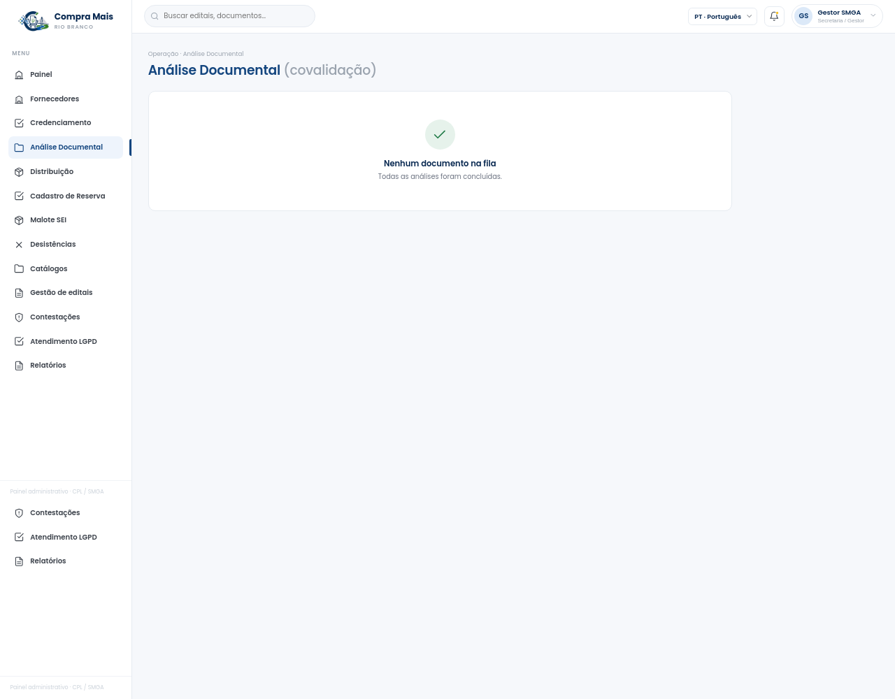
stateDiagram-v2
[*] --> Pendente
Pendente --> Aprovado: covalidação ok
Pendente --> Reprovado: com motivo
Reprovado --> Pendente: fornecedor reenvia
Aprovado --> [*]
8. Distribuição Inteligente
(perfil SMGA)
O coração do programa: o rateio equitativo da demanda entre os fornecedores aptos. Selecione um edital publicado para ver e homologar o rateio.
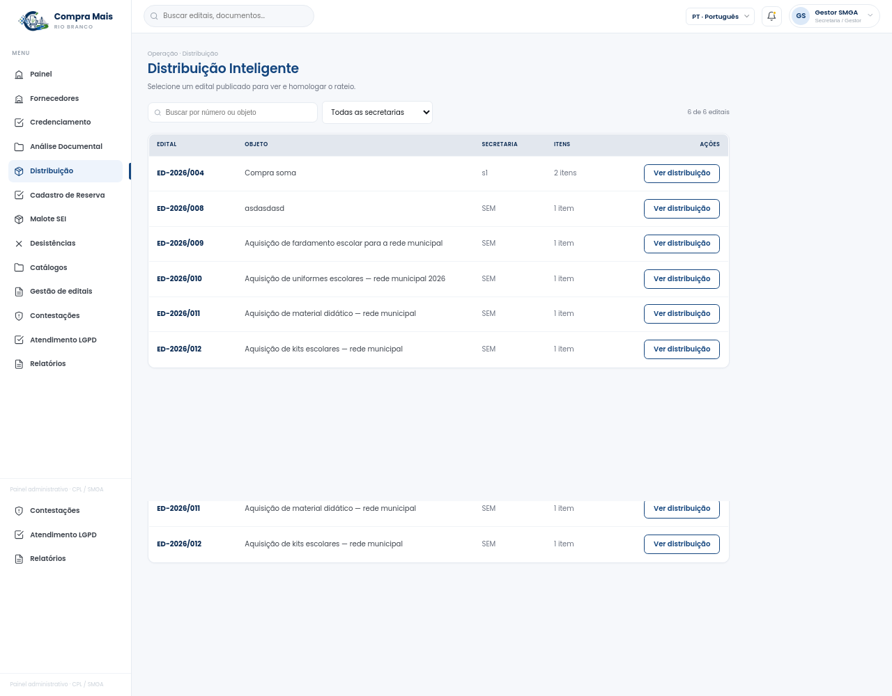
Ao abrir um edital, o detalhe do rateio mostra os totais, o rateio por item e eventual déficit (quando a capacidade declarada não cobre a demanda):
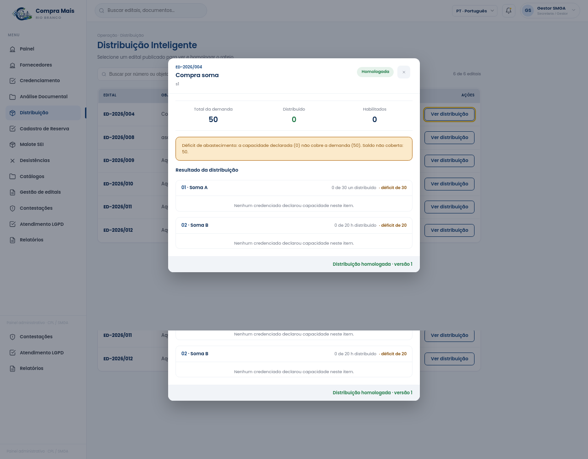
- Total da demanda, Distribuído e Habilitados (fornecedores aptos).
- Resultado da distribuição por item: quanto coube a cada fornecedor, respeitando o teto que ele declarou.
- Déficit de abastecimento: saldo não coberto — vai para o Cadastro de Reserva.
- Homologar congela a matriz (append-only, versionada) — "Distribuição homologada · versão N".
O motor é determinístico e reprodutível: a mesma entrada gera o mesmo rateio (com registro de hash e regra de desempate para auditoria).
flowchart TD
A[Demanda do item] --> B[Divisão igualitária<br/>entre os aptos]
B --> C{Cabe no teto<br/>de cada um?}
C -- sim --> D[Cota confirmada]
C -- excede --> E[Limita ao teto e<br/>redistribui o excedente]
E --> B
D --> F[Homologação<br/>matriz congelada + versão]
A --> G[Saldo não coberto<br/>→ Cadastro de Reserva]
9. Cadastro de Reserva
(perfil SMGA)
Fila cronológica com o saldo não atendido e os retardatários (quem se credenciou após a distribuição). É acionada em uma 2ª demanda, preservando a ordem de chegada.
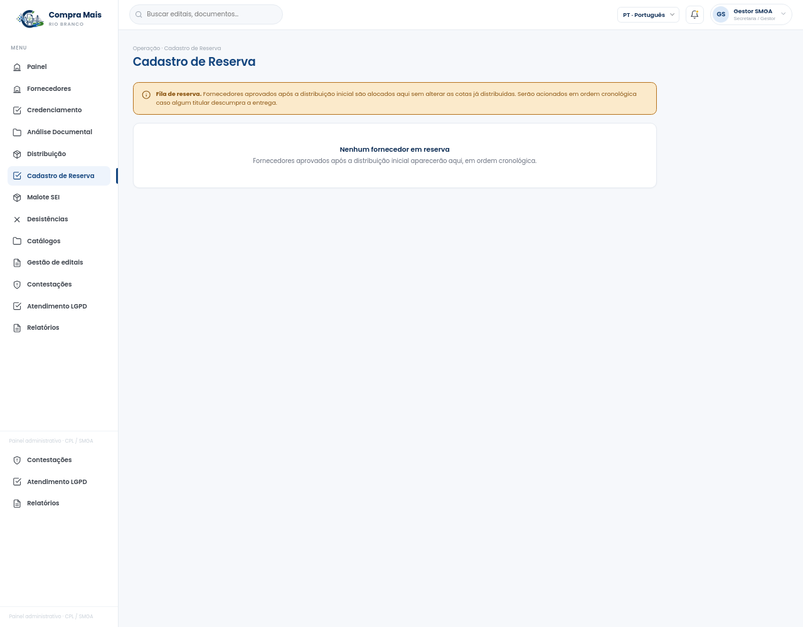
10. Desistências
(perfil SMGA)
Registra e acompanha desistências de fornecedores em editais/cotas, liberando saldo para redistribuição conforme as regras do programa.
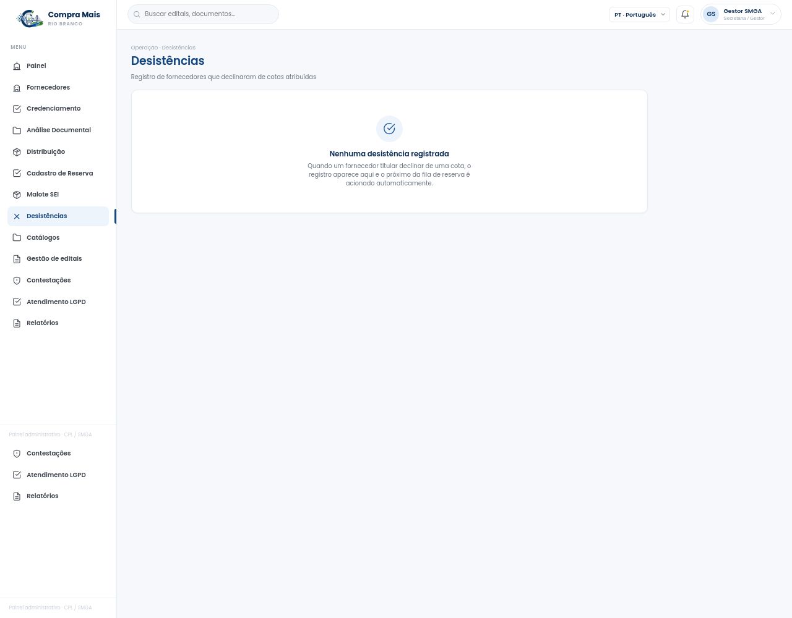
11. Malote SEI
(perfis SMGA e Administrador)
Gera o malote (conjunto de peças documentais) e o integra ao SEI (Sistema Eletrônico de Informações), formalizando o processo administrativo. Suporta exportação idempotente e o envio/consulta de processos no SEI.
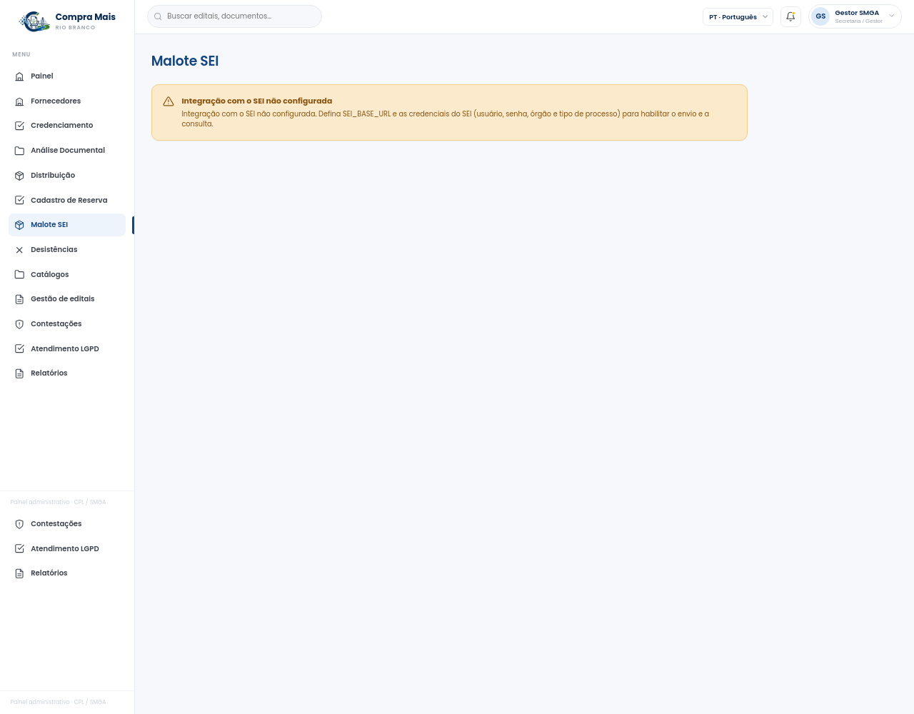
A integração real com o SEI depende de configuração (URL, usuário, órgão). Sem ela, opera em modo seguro (mock) até a habilitação pela TI.
12. Fornecedores
(perfil SMGA)
Diretório das empresas cadastradas, com CNPJ, razão social, porte (ME/MEI/EPP), situação cadastral e status de credenciamento. Permite busca, filtros e a consulta detalhada de cada fornecedor.
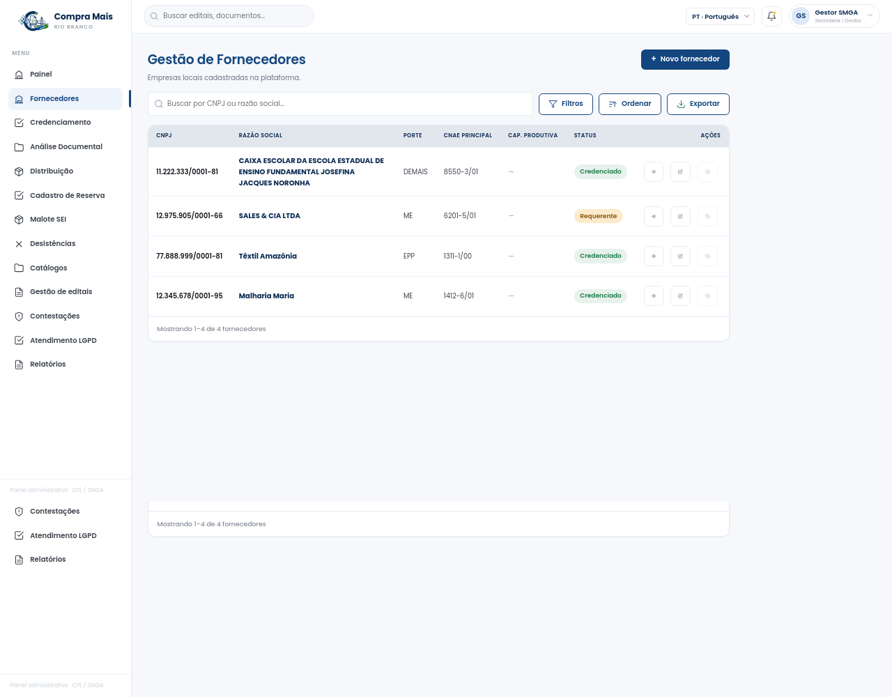
13. Contestações de CNAE
(perfil SMGA)
Quando um fornecedor entende que deveria ser compatível com um edital, ele abre uma contestação de CNAE. Aqui o gestor acata (ajustando os CNAEs-alvo) ou recusa (com justificativa).
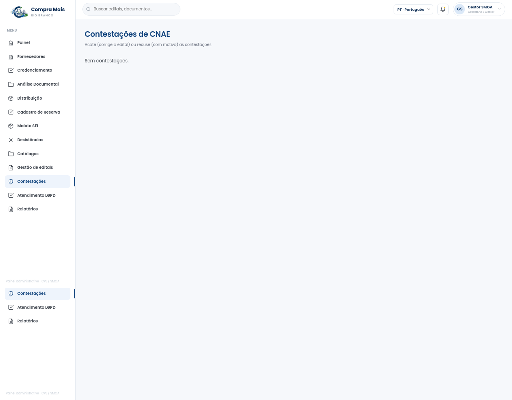
14. Atendimento LGPD
(perfil Encarregado/DPO e Administrador)
Central de direitos do titular (LGPD): solicitações de acesso, correção ou exclusão de dados pessoais. O Encarregado atende, recusa (com motivo) ou descarta após a retenção legal.
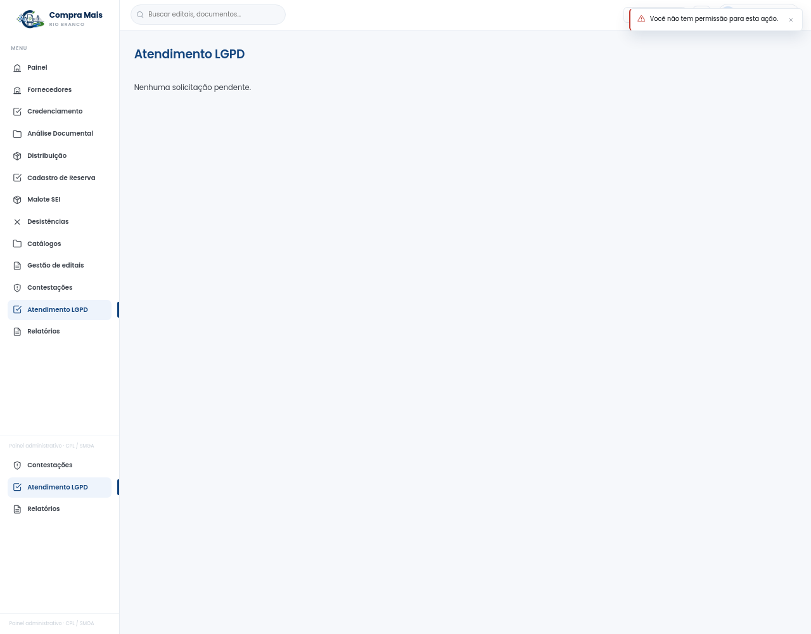
A exclusão só é permitida após o prazo de retenção legal da categoria de dado; antes disso o sistema bloqueia o descarte.
15. Relatórios
(perfil SMGA)
Central de relatórios gerenciais dos processos. Escolha o relatório no seletor, filtre por período e secretaria, e exporte em PDF (com cabeçalho: logo, título, emissão e período), CSV ou JSON.
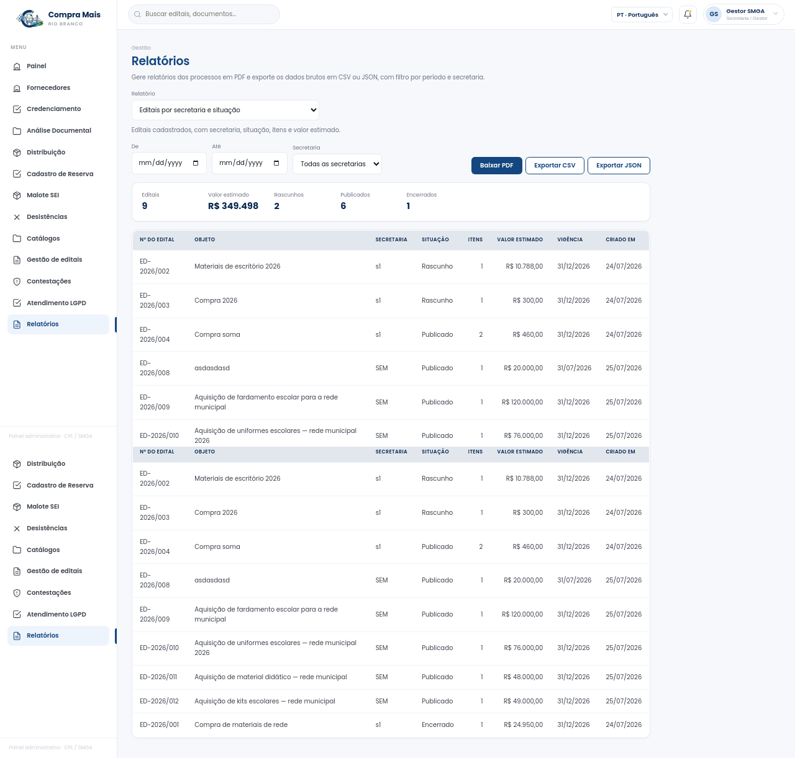
Relatórios disponíveis: Editais por secretaria e situação, Distribuições e investimento, Rateio de cotas por fornecedor, Fornecedores credenciados por porte, Participação por porte (MEI/ME) e Bloqueios ativos.
16. Catálogos
(perfis SMGA e Administrador)
Mantém os dados de referência usados em todo o sistema: materiais e serviços (base dos itens de edital), unidades de medida e correlatos. Mudanças aqui refletem nos formulários de edital.
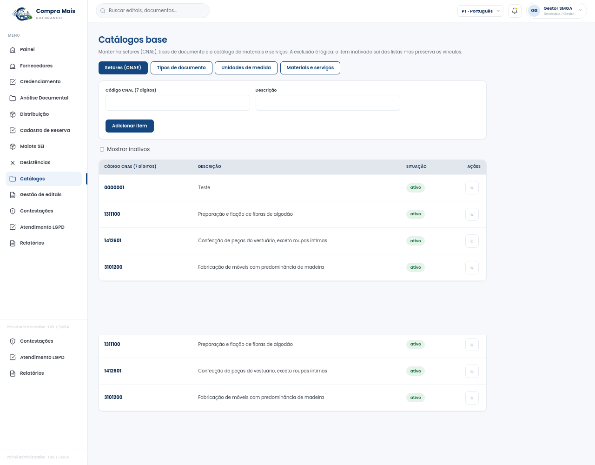
17. Secretarias
(perfil Administrador)
Cadastro das secretarias demandantes (sigla, nome, responsável, contato). Cada edital pertence a uma secretaria; os relatórios e o rateio agrupam por ela.
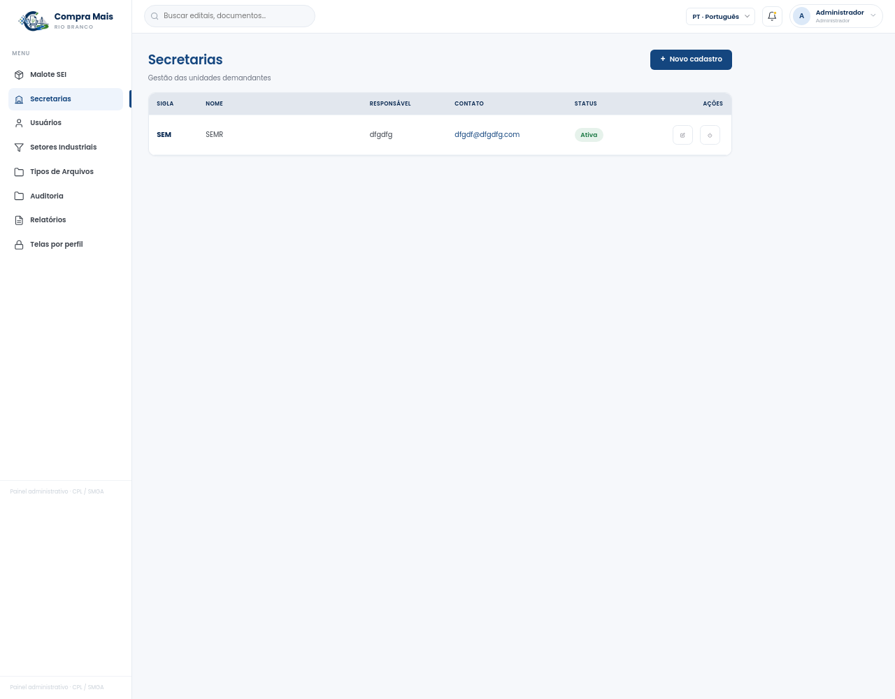
18. Setores Industriais (CNAE)
(perfil Administrador)
Catálogo de CNAEs atendidos (código + descrição). É a base da compatibilidade entre editais e empresas e da rotulação dos segmentos na Transparência.
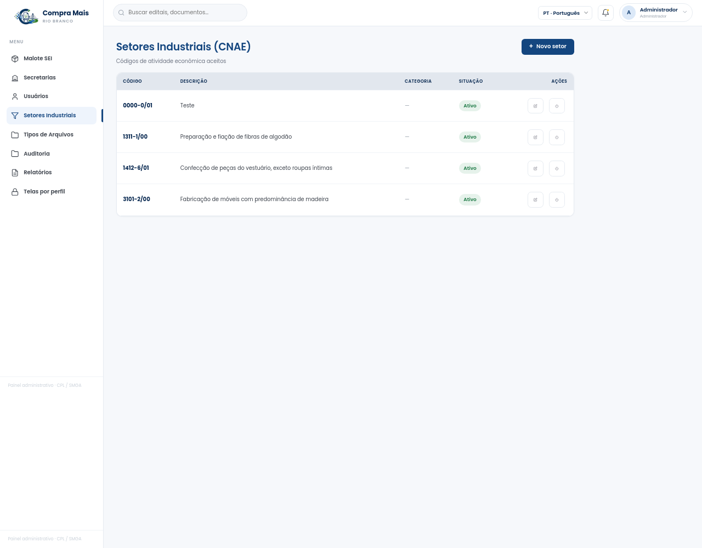
19. Tipos de Arquivos
(perfil Administrador)
Define os tipos de documento exigidos no credenciamento (ex.: Cartão CNPJ, FGTS, CNDT), se são obrigatórios e se exigem validade. É o que gera a lista de documentos que o fornecedor precisa enviar.
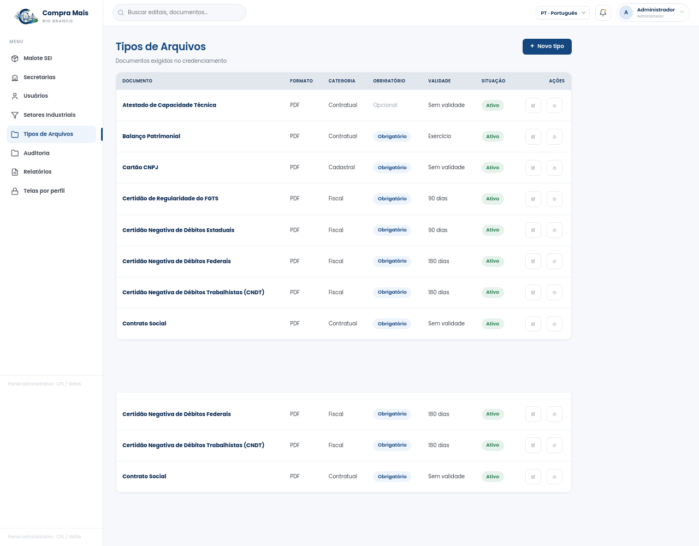
20. Usuários internos
(perfil Administrador)
Cria e administra as contas da equipe (nome, e-mail, papel, secretaria/cargo). É aqui que se concede ou revoga o acesso de um analista, gestor, auditor ou DPO.
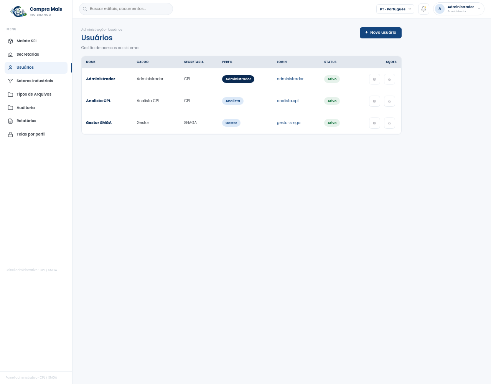
21. Administração de Telas por Perfil
(perfil Administrador)
Controla quais telas do Painel cada papel enxerga — uma matriz perfil × tela. Marque/desmarque para ajustar o acesso. As permissões do próprio Administrador também são editáveis, mas ele nunca perde o acesso a esta tela (proteção anti-lockout).
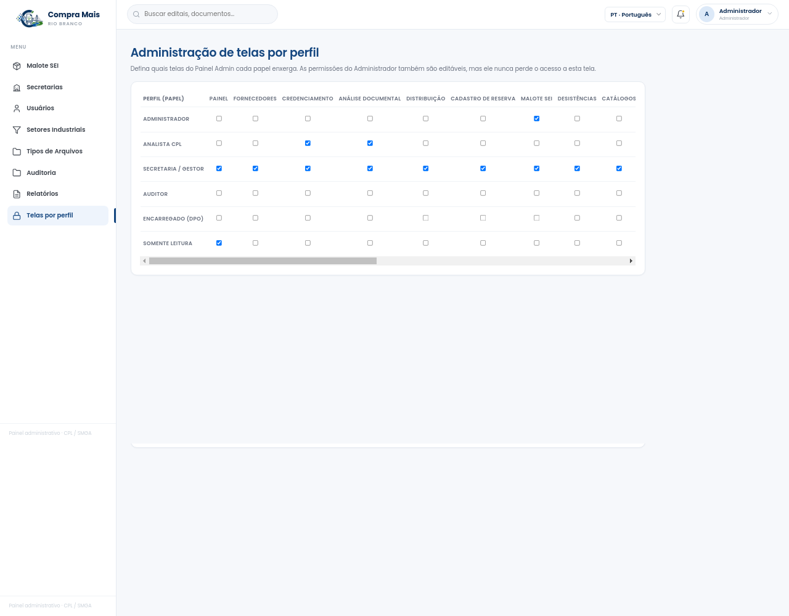
Esta é a fonte de verdade do que cada perfil vê no menu e pode abrir. O controle real dos dados é sempre reforçado no servidor (RBAC): ocultar uma tela e negar o acesso ao dado andam juntos.
22. Auditoria
(perfis Administrador e Auditor)
Trilha append-only de tudo o que acontece no sistema: quem fez, o quê e quando. É imutável (nada é apagado) e serve à fiscalização e à prestação de contas. Permite filtrar por evento/período e exportar (CSV/JSON).
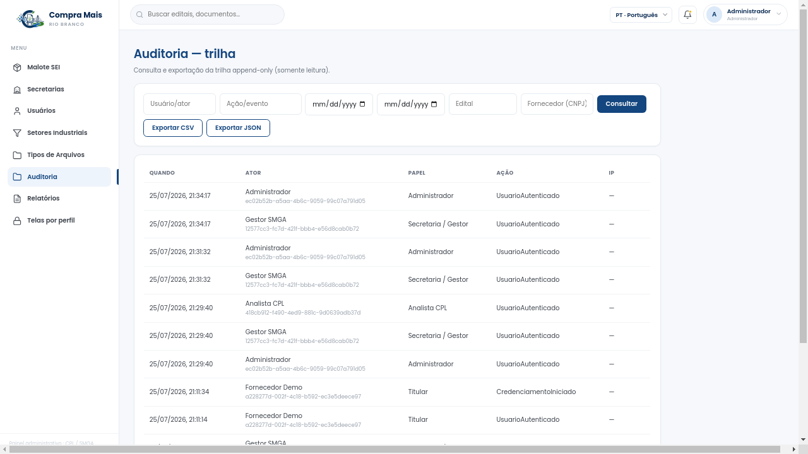
Ações sensíveis — publicação de edital, homologação de distribuição, aceite de termo, covalidação de documento, atendimento LGPD — ficam registradas com ator, data e finalidade.
23. Glossário e boas práticas
| Termo | Significado |
|---|---|
| Edital | Uma demanda de compra de uma secretaria (1 edital = 1 demanda). |
| CNAE | Ramo de atividade; define a compatibilidade entre editais e empresas. |
| Covalidação | Análise/validação de um documento enviado pelo fornecedor. |
| Apto | Fornecedor com credenciamento aprovado, que entra no rateio. |
| Rateio / Distribuição | Divisão igualitária da demanda entre os aptos, limitada ao teto de cada um. |
| Homologar | Congelar a matriz de distribuição (versão imutável, auditável). |
| Déficit | Saldo da demanda não coberto pela capacidade declarada. |
| Cadastro de Reserva | Fila que recebe o saldo não atendido e retardatários (2ª demanda). |
| Malote / SEI | Conjunto de peças formalizado no Sistema Eletrônico de Informações. |
| RBAC / Telas por perfil | Controle de quais telas e dados cada papel acessa. |
| Trilha de auditoria | Registro imutável (append-only) de todas as ações. |
Boas práticas do dia a dia
- Comece pelo Dashboard — ele aponta análises pendentes e editais a vencer.
- Antes de distribuir, garanta que a Análise Documental está em dia (só aptos entram no rateio).
- Homologue a distribuição apenas quando o rateio estiver correto — a matriz vira versão imutável.
- Mantenha os Catálogos, Tipos de Arquivos e Setores (CNAE) atualizados: eles alimentam os editais e a compatibilidade.
- Conceda acesso pelo menor privilégio necessário em Usuários e Telas por Perfil.
- Em dúvidas de conformidade, consulte a Auditoria — nada se perde.
Precisa de ajuda? Use os canais de suporte da Prefeitura de Rio Branco. Este manual acompanha a Versão 2.0 do Compra Mais. Para o guia da empresa fornecedora, veja o Manual do Fornecedor.